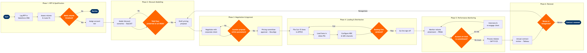

| Step | L4 Step Name | KPI / Target | Pain Point / Risk | Gate |
|---|---|---|---|---|
| 1.1 | Receive and log corporate RFP in CRM | RFP acknowledged within 2 business days; 100% of RFPs logged before pricing work begins | RFPs arriving via TMC intermediaries create version-control conflicts when the corporate client also engages the airline directly, leading to duplicate records in Salesforce | |
| 1.2 | Assess historical travel volume and route fit | Minimum qualifying annual spend $250K; route overlap ≥60% of account top-10 O&Ds | SkyCAST O&D data attributes bookings to agency PCC rather than corporate ID, making true account volume difficult to isolate without PRISM reconciliation | |
| 1.3 | Determine account tier and eligibility decision | ≥95% of eligible accounts tiered within 2 business days of volume assessment | Tier thresholds are static annual targets and do not account for seasonal concentration; high-value accounts with strong Q4 travel patterns may be under-tiered mid-year | ⚠ |
| 2.1 | Model discount scenarios by O&D and cabin | Modelled revenue dilution <3% vs unconstrained network revenue on contracted routes | Amadeus NRM inventory controls on high-demand routes may cap discount depth without manual override by the Revenue Manager, creating tension between corporate sales targets and RM policy | |
| 2.2 | Validate discount against yield floor — gate | Revenue dilution from corporate contract ≤2% on constrained routes; ≤5% on off-peak routes | Yield floors are set seasonally and may not reflect intra-season demand shifts; approving discounts in low-demand periods can conflict with late-breaking demand spikes not yet captured in SkyCAST forecasts | ⚠ |
| 2.3 | Draft and issue corporate pricing proposal | Proposal issued within 3 business days of yield approval; 100% of proposals include ATPCO-compatible fare basis code references | Proposal templates are maintained separately from ATPCO rule structures; manual reconciliation is needed before filing, introducing errors when templates are not updated after ATPCO rule changes | |
| 3.1 | Negotiate terms with corporate client or TMC | Negotiation cycle completed in ≤3 rounds; average cycle time ≤10 business days | TMC-represented clients (BCD, Amex GBT) frequently introduce non-standard contract clauses (guaranteed availability, cap-on-surcharges) outside the airline's standard ATPCO framework, requiring legal review that extends cycle time | |
| 3.2 | Assess commercial impact of counter-proposal | Counter-proposal modelled and responded to within 1 business day | Frequent counter-proposals on routes shared with alliance partners or interline agreements require additional proration impact analysis not automated in NRM, adding 2–3 days to cycle time | ⚠ |
| 3.3 | Obtain pricing committee sign-off | 100% of contracts with annual value >$1M approved at VP level; approval latency ≤2 business days | Approval workflows are largely email-based with no enforced audit trail in Salesforce; negotiated terms can deviate from the approved scenario without detection, creating post-execution disputes | |
| 4.1 | File negotiated fares in ATPCO (Cat-15) | Fare filing completed ≥2 business days before contract effective date; 0% mis-pricing incidents on go-live day | Category 15 private fare rule coding errors (incorrect routing restrictions or permitted combinations) surface only at booking engine pricing, causing customer-facing mis-pricing and requiring urgent ATPCO re-filing | |
| 4.2 | Load and activate private fares in PSS | 100% of contracted fare basis codes active in PSS ≥24 hours before go-live; zero booking-class mismatches | Altéa PSS fare activation requires a manual QA step by a separate Revenue Management team; handoff gaps between Tariff and RM teams cause last-minute activation failures discovered only when test bookings are attempted | |
| 4.3 | Configure corporate access in distribution channels | Corporate traveller can book contracted fare within 24 hours of go-live; NDC channel coverage ≥80% of contracted fare conditions | NDC API Gateway does not support all Category 15 private fare rule conditions (e.g. negotiated blackout dates); non-compliant fares fall back to GDS-only distribution, limiting direct channel adoption targets | |
| 4.4 | Validate end-to-end booking flow — gate | 100% of test bookings price correctly across all channels before live date; defects remediated within 4 hours | GDS test environment does not always replicate live Altéa inventory state; a clean test result can still produce pricing failures in production if RM inventory availability differs from the test snapshot | ⚠ |
| 5.1 | Monitor monthly volume commitment attainment | Volume reporting latency ≤3 business days after month-end; attainment variance flagged if >10% below commitment trajectory | Sabre PRISM captures GDS-originated bookings only; direct channel and NDC bookings require separate reconciliation from Altéa PSS, causing systematic under-reporting of attainment and triggering false at-risk alerts | |
| 5.2 | Identify and intervene on at-risk accounts | ≥80% of accounts on-track to meet annual commitment by month 6; at-risk accounts contacted within 5 business days of flag | Tableau dashboards are refreshed from AWS Redshift nightly; intra-month booking surges or drops are invisible until the next refresh cycle, delaying intervention and jeopardising end-of-year rebate qualification | ⚠ |
| 5.3 | Calculate and process annual rebates | Rebate processed within 30 days of contract year-end; 100% of rebate calculations independently verified against PRISM and Altéa data | Rebate calculations depend on reconciled volume data across PRISM (GDS), Altéa PSS (direct/NDC), and SAP AR; discrepancies between sources cause disputes that delay payment and damage account relationships | |
| 6.1 | Conduct annual contract performance review | Review initiated ≥90 days before contract expiry; 100% of Tier 1 accounts reviewed in person | Account managers carrying portfolios of >50 corporate contracts lack automated renewal-pipeline visibility in Salesforce; late review initiation (within 30 days of expiry) forces rushed renegotiation and weakens the airline's commercial position | |
| 6.2 | Trigger renewal, renegotiation, or termination | 100% of contracts actioned ≥60 days before expiry; zero contracts lapsing without a documented decision | Accounts flagged for termination due to low volume often have strategic route dependencies (e.g. government contracts on thin markets) that override commercial logic; no system-enforced escalation path exists to flag strategic override decisions for VP review | ⚠ |